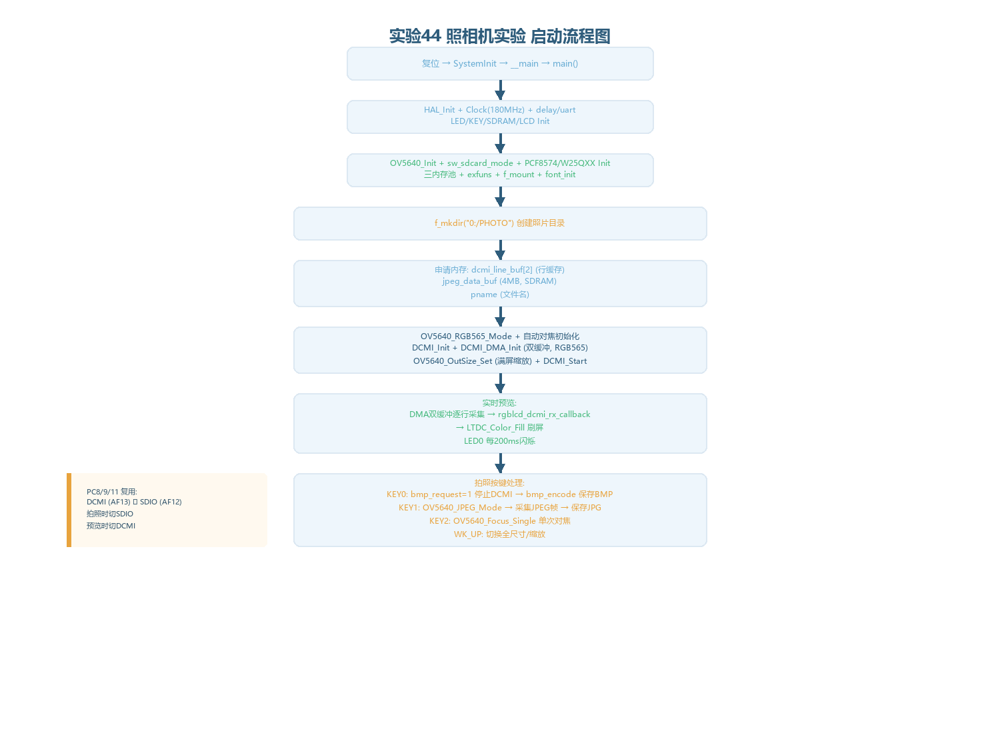
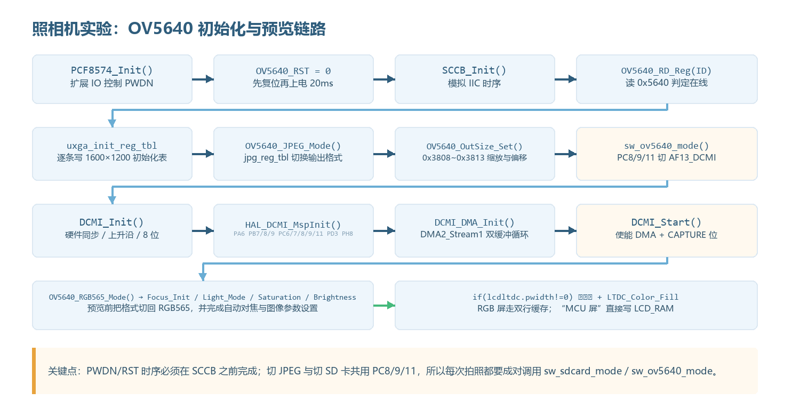
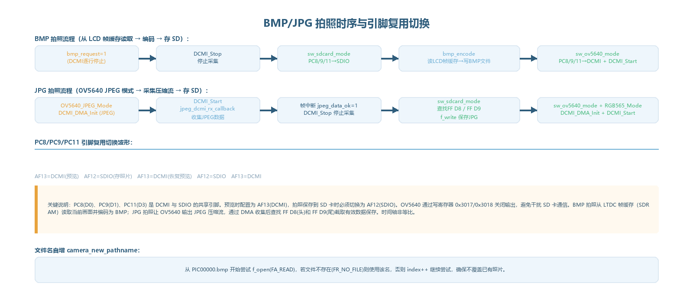
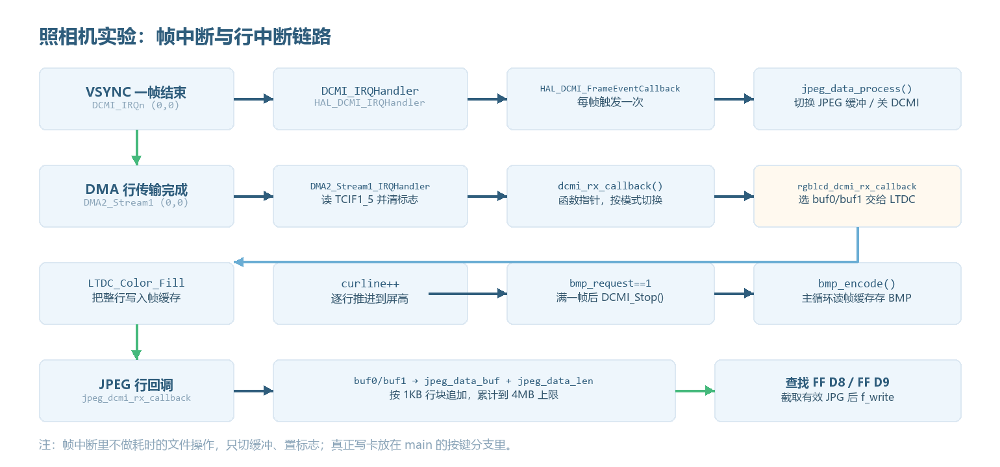

01 实验目标与硬件资源
实验44 把“摄像头采集 + LCD 显示 + SD 卡存储”串成一条完整链路。预览时 OV5640 输出 RGB565，DCMI 通过 DMA 双缓冲把每行像素搬到 LCD 帧缓存；拍照时切到 JPEG 模式，DCMI 把压缩码流拼进 4MB 缓冲，再截取 FF D8 到 FF D9 之间的有效数据写成 JPG。
| 资源 | 型号 / 引脚 | 作用 |
|---|---|---|
| 摄像头 | OV5640，500 万像素 | 输出 RGB565 或 JPEG |
| DCMI | PA6、PB7/8/9、PC6/7/8/9/11、PD3、PH8 | 8 位并口，硬件 HSYNC/VSYNC |
| DMA | DMA2_Stream1 / Channel1 | 外设到存储器，循环双缓冲 |
| IO 扩展 | PCF8574（IIC） | 控制 PWDN、蜂鸣器、LCD 背光等 |
| LCD | RGB 屏 + LTDC | 逐行写入帧缓存实现预览 |
| SD 卡 | SDMMC1 | 保存 0:/PHOTO 下的照片 |
| 按键 | KEY0 / KEY1 / KEY2 / KEY_UP | BMP 拍照 / JPG 拍照 / 对焦 / 缩放 |
sw_sdcard_mode()，拍完必须 sw_ov5640_mode()，否则不是花屏就是写卡失败。02 工程目录与模块分工
| 目录 / 文件 | 关键符号 | 说明 |
|---|---|---|
| USER/main.c | main / ov5640_jpg_photo | 初始化、预览循环、两种拍照流程 |
| HARDWARE/OV5640 | OV5640_Init / OV5640_OutSize_Set | SCCB 读写、模式表、开窗与缩放 |
| HARDWARE/DCMI | DCMI_Init / DCMI_DMA_Init | 并口时序、DMA 双缓冲、帧/行中断 |
| HARDWARE/PCF8574 | PCF8574_WriteBit | IIC 扩展 IO，控制 PWDN 与蜂鸣器 |
| HARDWARE/SDIO | SD_Init | SD 卡底层读写 |
| PICTURE/bmp.c | bmp_encode | 把 LCD 区域读回并编码成 16 位 BMP |
| SYSTEM/sys | Stm32_Clock_Init | 180MHz 主频与总线分频 |
驱动分层很清晰：main.c 只负责“什么时候做什么”，像素怎么搬由 DCMI 驱动决定，寄存器怎么写由 OV5640 驱动决定。排查时先判断问题落在哪一层，能少走很多弯路。
- 应用层：决定预览/拍照、什么时候停流、什么时候切引脚。
- DCMI 层：只关心并口时序、DMA 缓冲与中断分发，不知道文件系统。
- 传感器层：只关心 SCCB 寄存器与输出格式，不知道数据被搬到哪里。
- 跨层直接调用（例如在帧中断里写卡）会破坏时序，必须避免。
03 上电启动与 main 全貌

int main(void)
{
...
HAL_Init(); // HAL 与时基
Stm32_Clock_Init(360,25,2,8); // 180MHz
delay_init(180);
uart_init(115200);
LED_Init();
KEY_Init();
SDRAM_Init(); // 帧缓存与 JPEG 大缓冲都靠它
LCD_Init();
OV5640_Init(); // 含 PCF8574 初始化与 SCCB 读 ID
sw_sdcard_mode(); // 先把共用引脚切给 SD 卡
PCF8574_Init();
W25QXX_Init();
my_mem_init(SRAMIN);
my_mem_init(SRAMEX);
my_mem_init(SRAMCCM);
exfuns_init();
f_mount(fs[0],"0:",1);
...
res = f_mkdir("0:/PHOTO"); // 照片目录不存在则创建
if (res != FR_EXIST && res != FR_OK)
{
res = f_mkdir("0:/PHOTO");
...
}
dcmi_line_buf[0] = mymalloc(SRAMIN,jpeg_line_size*4); // 2KB×4
dcmi_line_buf[1] = mymalloc(SRAMIN,jpeg_line_size*4);
jpeg_data_buf = mymalloc(SRAMEX,jpeg_buf_size); // 4MB，放 SDRAM
pname = mymalloc(SRAMIN,30);
while (pname == NULL || !dcmi_line_buf[0] || !dcmi_line_buf[1] || !jpeg_data_buf)
{
Show_Str(30,190,240,16,"内存分配失败!",16,0); // 死等，不继续
delay_ms(200);
LCD_Fill(30,190,240,146,WHITE);
delay_ms(200);
}
while (OV5640_Init()) // 读不到 ID 就重试
{
Show_Str(30,190,240,16,"OV5640 错误!",16,0);
delay_ms(200);
LCD_Fill(30,190,239,206,WHITE);
delay_ms(200);
}
... // 对焦/色彩/亮度/DCMI/窗口设置，见第 7、8 节
}
- OV5640 必须先于 DCMI：DCMI 只是接收端，传感器没出图时启动只会收到全 0。
- 大缓冲必须先申请：JPEG 最多 4MB，只能放在外部 SDRAM；申请失败时绝不能再启动 DMA。
- 目录必须先存在：
f_open(FA_CREATE_NEW)不会自动建父目录，0:/PHOTO缺失会直接返回错误。
04 启动文件与向量表
启动文件定义了初始 MSP、复位入口与全部中断向量。DCMI 的帧中断和 DMA2_Stream1 的传输完成中断能被 HAL 接管，前提是向量表里的符号名与 stm32f4xx_it.c 或驱动中的实现完全一致。
Stack_Size EQU 0x00000400
Heap_Size EQU 0x00000200
AREA RESET, DATA, READONLY
EXPORT __Vectors
__Vectors DCD __initial_sp
DCD Reset_Handler
DCD NMI_Handler
DCD HardFault_Handler
...
DCD DCMI_IRQHandler // 帧中断入口
DCD DMA2_Stream1_IRQHandler // 行传输完成
DCD DMA2_Stream3_IRQHandler
DCD DMA2_Stream6_IRQHandler
DCD SDIO_IRQHandler
DCD SysTick_Handler
Reset_Handler PROC
EXPORT Reset_Handler [WEAK]
IMPORT SystemInit
IMPORT __main
LDR R0, =SystemInit
BLX R0 // 最小系统初始化
LDR R0, =__main
BX R0 // C 库初始化后进入 main
ENDP
DCMI_IRQHandler 而不是别的名字；名字不一致时链接器不会报错，只会悄悄使用默认死循环。05 SystemInit 与 HAL_Init
OV5640 的 JPEG 编码与 BMP 读回都涉及大量乘加与内存拷贝，打开 FPU 与数据 Cache 能明显改善帧率。这两项在 SystemInit 中完成，早于 main。
void SystemInit(void)
{
RCC->CR |= (1 << 0);
RCC->CFGR = 0x00000000;
RCC->CR &= ~(1 << 24);
RCC->CR &= ~(1 << 16);
RCC->CR &= ~(1 << 28);
SCB->VTOR = FLASH_BASE | VECT_TAB_OFFSET; // 向量表基址
#if (__FPU_PRESENT == 1) && (__FPU_USED == 1)
SCB->CPACR |= ((3UL << 10*2)|(3UL << 11*2)); // CP10/CP11 全访问
#endif
... // I-Cache / D-Cache / 预取
}
HAL_StatusTypeDef HAL_Init(void)
{
HAL_NVIC_SetPriorityGrouping(NVIC_PRIORITYGROUP_4); // 4 位抢占
HAL_InitTick(TICK_INT_PRIORITY); // 1ms SysTick
HAL_MspInit(); // 本工程为空
return HAL_OK;
}
- 分组 4 表示 4 位抢占优先级、0 位子优先级，数值越小越紧急。
- DCMI 与 DMA2_Stream1 都设为 0,0，保证行数据不会因为其他中断延迟而溢出。
- SDIO 设为 2,0，拍照写卡时可以被打断，但不会丢 DCMI 的行。
06 时钟树与 DCMI 时钟域
DCMI 挂在 AHB2/APB2 域，DMA2 挂在 AHB1。PLL 参数仍是 360/25/2/8，得到 SYSCLK=180MHz、HCLK=180MHz、APB1=45MHz、APB2=90MHz。OV5640 的 PCLK 由传感器自己产生，DCMI 只负责在上升沿采样，因此不需要给 DCMI 配分频。
RCC_OscInitStruct.OscillatorType = RCC_OSCILLATORTYPE_HSE; RCC_OscInitStruct.HSEState = RCC_HSE_ON; RCC_OscInitStruct.PLL.PLLState = RCC_PLL_ON; RCC_OscInitStruct.PLL.PLLSource = RCC_PLLSOURCE_HSE; RCC_OscInitStruct.PLL.PLLM = pllm; // 25 → 1MHz RCC_OscInitStruct.PLL.PLLN = plln; // ×360 → 360MHz RCC_OscInitStruct.PLL.PLLP = pllp; // ÷2 → 180MHz RCC_OscInitStruct.PLL.PLLQ = pllq; // ÷8 → 45MHz HAL_RCC_OscConfig(&RCC_OscInitStruct); RCC_ClkInitStruct.AHBCLKDivider = RCC_SYSCLK_DIV1; // HCLK 180MHz RCC_ClkInitStruct.APB1CLKDivider = RCC_HCLK_DIV4; // 45MHz RCC_ClkInitStruct.APB2CLKDivider = RCC_HCLK_DIV2; // 90MHz HAL_RCC_ClockConfig(&RCC_ClkInitStruct,FLASH_LATENCY_5); // 180MHz 需 5 等待
07 OV5640 上电与 SCCB 配置

OV5640 的 PWDN 由 PCF8574 控制，RST 由 PA15 控制。正确顺序是“先拉低 RST，再上电，延时，释放 RST”，顺序反了会出现 ID 读不到或图像异常。ID 校验通过后写 0x3103 选择系统时钟，再软复位，最后批量写 SXGA 初始化表。
u8 OV5640_Init(void)
{
u16 i = 0;
u16 reg;
GPIO_InitTypeDef GPIO_Initure;
__HAL_RCC_GPIOA_CLK_ENABLE();
GPIO_Initure.Pin = GPIO_PIN_15; // PA15 = OV5640_RST
GPIO_Initure.Mode = GPIO_MODE_OUTPUT_PP;
GPIO_Initure.Pull = GPIO_PULLUP;
GPIO_Initure.Speed = GPIO_SPEED_HIGH;
HAL_GPIO_Init(GPIOA,&GPIO_Initure);
PCF8574_Init(); // PWDN 在扩展 IO 上
OV5640_RST = 0; // 先复位
delay_ms(20);
OV5640_PWDN_Set(0); // 再上电
delay_ms(5);
OV5640_RST = 1; // 释放复位
delay_ms(20);
SCCB_Init(); // 模拟 IIC
delay_ms(5);
reg = OV5640_RD_Reg(OV5640_CHIPIDH); // ID 高字节
reg <<= 8;
reg |= OV5640_RD_Reg(OV5640_CHIPIDL); // ID 低字节
if (reg != OV5640_ID) // 期望 0x5640
{
printf("ID:%d\r\n",reg);
return 1;
}
OV5640_WR_Reg(0x3103,0X11); // 系统时钟来自 pad
OV5640_WR_Reg(0X3008,0X82); // 软复位
delay_ms(10);
for (i = 0; i < sizeof(ov5640_uxga_init_reg_tbl)/4; i++)
{
OV5640_WR_Reg(ov5640_uxga_init_reg_tbl[i][0],ov5640_uxga_init_reg_tbl[i][1]);
}
OV5640_Flash_Ctrl(1); // 闪光灯自检
delay_ms(50);
OV5640_Flash_Ctrl(0);
return 0x00;
}
OV5640_OutSize_Set(offx,offy,w,h)写 0x3808~0x380B 决定实际输出尺寸，写 0x3810~0x3813 决定 ISP 取图偏移。- 写寄存器必须夹在 0x3212=0x03（开始组 3）与 0x3212=0x13（结束组 3）之间，最后 0xA3 生效，否则参数不会原子更新。
- RGB 屏还要额外写 0x3821=0x06 做水平镜像，否则预览左右颠倒。
- 1024/1280 高的屏先写 0x3035=0x51 降帧率，避免 LTDC 与 DCMI 抢带宽导致抖动。
08 预览采集时序与双缓冲

DCMI 配成硬件同步、PCLK 上升沿、VSYNC/HSYNC 低有效、8 位数据、全帧捕获。DMA 使用循环模式与双缓冲：dcmi_line_buf[0] 与 dcmi_line_buf[1] 交替接收，每块大小为 lcddev.width/2 个半字，正好半行像素。
void DCMI_Init(void)
{
DCMI_Handler.Instance = DCMI;
DCMI_Handler.Init.SynchroMode = DCMI_SYNCHRO_HARDWARE; // 硬件 HSYNC/VSYNC
DCMI_Handler.Init.PCKPolarity = DCMI_PCKPOLARITY_RISING; // PCLK 上升沿
DCMI_Handler.Init.VSPolarity = DCMI_VSPOLARITY_LOW; // VSYNC 低有效
DCMI_Handler.Init.HSPolarity = DCMI_HSPOLARITY_LOW; // HSYNC 低有效
DCMI_Handler.Init.CaptureRate = DCMI_CR_ALL_FRAME; // 全帧
DCMI_Handler.Init.ExtendedDataMode = DCMI_EXTEND_DATA_8B; // 8 位
HAL_DCMI_Init(&DCMI_Handler); // 内部会开帧中断
}
void DCMI_DMA_Init(u32 mem0addr,u32 mem1addr,u16 memsize,u32 memblen,u32 meminc)
{
__HAL_RCC_DMA2_CLK_ENABLE();
__HAL_LINKDMA(&DCMI_Handler,DMA_Handle,DMADMCI_Handler);
DMADMCI_Handler.Instance = DMA2_Stream1; // Stream1
DMADMCI_Handler.Init.Channel = DMA_CHANNEL_1;
DMADMCI_Handler.Init.Direction = DMA_PERIPH_TO_MEMORY; // 外设到内存
DMADMCI_Handler.Init.PeriphInc = DMA_PINC_DISABLE; // DCMI->DR 固定
DMADMCI_Handler.Init.MemInc = meminc;
DMADMCI_Handler.Init.PeriphDataAlignment = DMA_PDATAALIGN_WORD;
DMADMCI_Handler.Init.MemDataAlignment = memblen; // 半字/字
DMADMCI_Handler.Init.Mode = DMA_CIRCULAR; // 循环，持续预览
DMADMCI_Handler.Init.Priority = DMA_PRIORITY_HIGH;
DMADMCI_Handler.Init.FIFOMode = DMA_FIFOMODE_ENABLE;
DMADMCI_Handler.Init.FIFOThreshold = DMA_FIFO_THRESHOLD_HALFFULL;
HAL_DMA_Init(&DMADMCI_Handler);
__HAL_UNLOCK(&DMADMCI_Handler); // 防止 HAL_BUSY
if (mem1addr == 0)
HAL_DMA_Start(&DMADMCI_Handler,(u32)&DCMI->DR,mem0addr,memsize);
else
{
HAL_DMAEx_MultiBufferStart(&DMADMCI_Handler,(u32)&DCMI->DR,
mem0addr,mem1addr,memsize);
__HAL_DMA_ENABLE_IT(&DMADMCI_Handler,DMA_IT_TC); // 行完成中断
HAL_NVIC_SetPriority(DMA2_Stream1_IRQn,0,0);
HAL_NVIC_EnableIRQ(DMA2_Stream1_IRQn);
}
}
__HAL_UNLOCK 不是可有可无：HAL 的 HAL_DMA_Start 内部先加锁，若 DMA 句柄残留锁定状态会直接返回 HAL_BUSY，表现为“初始化成功但一帧都没有”。09 中断链路与帧率统计

void DCMI_IRQHandler(void)
{
HAL_DCMI_IRQHandler(&DCMI_Handler); // 交给 HAL 分发
}
void HAL_DCMI_FrameEventCallback(DCMI_HandleTypeDef *hdcmi)
{
jpeg_data_process(); // JPEG 模式下收尾；预览模式下空操作
LED1 = !LED1; // 帧率指示灯
ov_frame++; // 帧计数
__HAL_DCMI_ENABLE_IT(&DCMI_Handler,DCMI_IT_FRAME); // HAL 会关帧中断，这里重开
}
void DMA2_Stream1_IRQHandler(void)
{
if (__HAL_DMA_GET_FLAG(&DMADMCI_Handler,DMA_FLAG_TCIF1_5) != RESET)
{
__HAL_DMA_CLEAR_FLAG(&DMADMCI_Handler,DMA_FLAG_TCIF1_5); // 清 TC 标志
dcmi_rx_callback(); // 函数指针：预览或 JPEG
}
}
void jpeg_data_process(void)
{
...
if (ovx_mode & 0x01) // 只有 JPEG 模式才需要拼接
{
if (jpeg_data_ok == 0) // 本帧还没收完
{
while (DMA2_Stream1->CR & 0X01); // 等 DMA 停止
rlen = jpeg_line_size - __HAL_DMA_GET_COUNTER(&DMADMCI_Handler);
pbuf = jpeg_data_buf + jpeg_data_len;
if (DMADMCI_Handler.Instance->CR & (1<<19))
for (i = 0; i < rlen; i++) pbuf[i] = dcmi_line_buf[1][i];
jpeg_data_len += rlen;
jpeg_data_ok = 1; // 通知主循环本帧完成
}
if (jpeg_data_ok == 2) // 上一帧已被取走
{
__HAL_DMA_SET_COUNTER(&DMADMCI_Handler,jpeg_line_size);
jpeg_data_ok = 0;
jpeg_data_len = 0; // 重新开始累计
}
}
if (bmp_request == 1) DCMI_Stop(); // BMP 拍完一帧就停
}
- DMA 的 CT 位（bit19）为 1 表示当前使用 M1AR，即 buf1；此时刚完成的是 buf0。
- 预览回调把整行拷贝到 LTDC 帧缓存，再把
curline加一。 - JPEG 回调把行数据追加到
jpeg_data_buf，累计到 4MB 上限为止。 - 帧中断里绝不能做
f_write，否则会错过下一帧的 VSYNC。
10 主循环与拍照分支
while (1)
{
key = KEY_Scan(0); // 不支持连按
if (key)
{
if (key != KEY2_PRES)
{
if (key == KEY0_PRES) // BMP 拍照前先停流
{
delay_ms(300); // 等画面稳定
bmp_request = 1; // 请求帧中断关 DCMI
while (bmp_request); // 等回调处理完
}
else DCMI_Stop();
}
if (key == WKUP_PRES) // 1:1 与满屏缩放切换
{
scale = !scale;
if (scale == 0)
{
fac = 800 / outputheight;
OV5640_OutSize_Set((1280-fac*lcddev.width)/2,
(800-fac*outputheight)/2,
lcddev.width,outputheight);
}
else
{
OV5640_OutSize_Set(16,4,lcddev.width,outputheight);
}
delay_ms(800);
}
else if (key == KEY2_PRES) OV5640_Focus_Single(); // 单次自动对焦
else if (sd_ok) // SD 卡正常才允许拍照
{
sw_sdcard_mode(); // PC8/9/11 切给 SDIO
if (key == KEY0_PRES)
{
camera_new_pathname(pname,0);
res = bmp_encode(pname,0,yoffset,lcddev.width,outputheight,0);
sw_ov5640_mode(); // 立刻切回摄像头
}
else if (key == KEY1_PRES)
{
camera_new_pathname(pname,1);
res = ov5640_jpg_photo(pname);
...
}
...
delay_ms(1000);
DCMI_Start(); // 先开再关，消除 RGB 屏侧移
DCMI_Stop();
}
if (key != KEY2_PRES) DCMI_Start(); // 恢复预览
}
delay_ms(10);
i++;
if (i == 20) { i = 0; LED0 = !LED0; } // 200ms 心跳
}
sw_sdcard_mode()把 PC8/9/11 从 DCMI 复用切回 SDIO，必须等 DCMI 完全停止后再切。- 写文件期间不能有 DCMI 中断进来改这三根线的配置，所以
DCMI_Stop()要彻底。 - 拍完立即
sw_ov5640_mode()，否则下一次预览读到的是 SD 卡引脚状态。
11 JPEG 拼接与 BMP 编码
JPEG 模式下 DCMI 收到的是一段段压缩码流，帧头帧尾并不保证落在缓冲区首尾。程序先等两帧（第一帧可能不完整），再从缓冲中搜索 FF D8 与 FF D9，只把中间的有效数据写盘。
u8 ov5640_jpg_photo(const u8 *pname)
{
...
jpeg_data_ok = 0;
sw_ov5640_mode(); // 切回 DCMI 引脚
OV5640_JPEG_Mode(); // 输出 JPEG
OV5640_OutSize_Set(16,4,2592,1944); // 500 万像素
dcmi_rx_callback = jpeg_dcmi_rx_callback;
DCMI_DMA_Init((u32)dcmi_line_buf[0],(u32)dcmi_line_buf[1],
jpeg_line_size,DMA_MDATAALIGN_WORD,DMA_MINC_ENABLE);
DCMI_Start();
while (jpeg_data_ok != 1); // 等第一帧
jpeg_data_ok = 2; // 丢弃，准备第二帧
while (jpeg_data_ok != 1); // 等第二帧
DCMI_Stop();
sw_sdcard_mode(); // 写卡前切引脚
res = f_open(f_jpg,(const TCHAR*)pname,FA_WRITE|FA_CREATE_NEW);
if (res == 0)
{
pbuf = (u8*)jpeg_data_buf;
for (i = 0; i < jpeg_data_len*4; i++)
{
if ((pbuf[i] == 0XFF) && (pbuf[i+1] == 0XD8)) { headok = 1; start = i; } // 找 SOI
if ((pbuf[i] == 0XFF) && (pbuf[i+1] == 0XD9) && headok) { end = i+1; break; } // 找 EOI
}
if (jpglen) f_write(f_jpg,pbuf+start,jpglen,&bwr); // jpglen = end - start + 1
f_close(f_jpg);
}
sw_ov5640_mode();
OV5640_RGB565_Mode(); // 恢复预览格式
...
}
BMP 拍照走另一条路：DCMI 先把整帧 RGB565 写进 LCD 帧缓存，bmp_encode 再按行读回像素，补成 16 位 BMP。这样做的代价是需要停流一帧，但实现简单、无需额外大缓冲。
- BMP：无损、实现简单、文件大（480×800 约 750KB），依赖 LCD 读点。
- JPG：文件小、分辨率高（可达 500 万），但需要 4MB 缓冲与码流截取。
- 两者都必须先停 DCMI 再切 SD 卡引脚，这是硬件连线决定的，不是软件选择。
12 串口日志与帧率观测
帧中断里翻转 LED1，因此 LED1 的闪烁频率就是帧率的一半；ov_frame 是全局帧计数，可在调试器里直接观察。JPEG 拍照时会打印码流长度，用于判断是否收满。
int fputc(int ch, FILE *f)
{
while ((USART1->SR & 0x40) == 0); // 等 TXE
USART1->DR = (u8)ch;
return ch;
}
printf("jpeg data size:%d\r\n",jpeg_data_len*4); // 单位：字节
printf("ID:%d\r\n",reg); // OV5640 ID 校验失败时输出
uart_init(115200) 已调用、PA9/PA10 没有被 DCMI 占用；本实验 DCMI 不使用 PA9/PA10，可放心复用。- LED1 不闪：DCMI 没有产生帧中断，先查 DCMI_Start 与 VSYNC 接线。
- LED1 闪但画面不动：行回调用的是旧行地址，重点查双缓冲的 M0AR/M1AR。
- LED1 闪且画面动但撕裂：DMA 半行长度与 LTDC 行宽不一致。
13 排错路径与验证清单
| 现象 | 最可能原因 | 验证方法 |
|---|---|---|
| 一直显示 OV5640 错误 | PWDN/RST 时序或 SCCB 不通 | 串口打印 ID；示波器看 PA15 与 SCL/SDA |
| 预览全黑 | DCMI 未启动或窗口为 0 | 确认 DCMI_Start 与 OutSize_Set 的宽高 |
| 预览花屏/撕裂 | DMA 双缓冲地址或半行长度不对 | 检查 lcddev.width/2 与 MemDataAlignment |
| 画面左右颠倒 | RGB 屏未写水平镜像 | 确认 0x3821=0x06 |
| 拍照后无法预览 | 忘记 sw_ov5640_mode | 检查拍照分支末尾的引脚切换 |
| JPG 文件打不开 | 未截取 FF D8~FF D9 | 打印 jpglen，与 jpeg_data_len*4 比较 |
- 只跑 OV5640_Init，串口能打印正确 ID。
- 只跑 DCMI 预览，LED1 以稳定频率闪烁。
- 插入 SD 卡，确认
0:/PHOTO能创建。 - 先拍 BMP 验证读回通路，再拍 JPG 验证码流拼接。
14 交互演示：拍照分支
bmp_request=1 等待帧中断停流，再调用 bmp_encode；KEY1 走 ov5640_jpg_photo，两者的共同点是都要先切 SD 卡引脚。